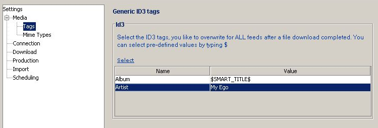

Like in Feed Media tag view here you can add and adjust audio tags (ID3 Tags) but with the difference than here the tags are rewritten for all audio files except they are changes in a particular feed or enclosure.

The Media view contains these fields:
| Select | Link allowing you to to be rewriten. These tags are then listed below. |
| Name | Name of the Tag to be rewritten. Is set when you select a tag in the select link above |
| Value | New value of the tag set when rewritten. You can enter the value you like and even add values from other tags. An easy what to do so is to enter a '$' character and then select a tag from the list. You can add as many placeholders as you like. |